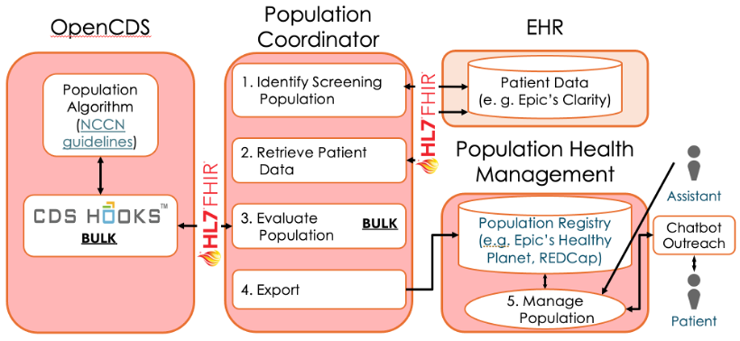

GARDE Implementation
Governance Review and Approval
Most healthcare systems (HCS) have a governance committee that reviews proposals for implementation of information technology (IT) tools. Undergoing governance review and obtaining approval is a critical early step to take once you have decided to implement GARDE. The governance review and approval processes vary across institutions, but the overarching goals of governance reviews are typically to:
prioritize implementation/customization of EHR functionality
assess the potential impact of new/customized functionality on existing clinical information systems, clinicians and patients
assess the effort needed to implement/customize the EHR functionality
ensure there are robust channels for user feedback and the dissemination of systems-related information to end users
Additional information
GARDE is highly customizable. Resources necessary for a successful implementation will vary depending on implementing HCS factors and decisions, such as:
Local IT architecture
How is Population Health Management function accomplished? (e.g. Epic? REDCap?)
How are patient outreach and education accomplished? (e.g. Chatbot? Clinical staff?)
How often is the target population evaluated? (e.g. One time? Weekly?)
Number of individuals in the target population for GARDE evaluation (e.g. does the target population include all patients seen within HCS? All patients who saw a HCS primary care provider for an outpatient visit within past 36 months? Only patients who have electronic patient portal account? Patient age range? Individuals with or without target condition?).
Condition(s) that GARDE evaluates (e.g. hereditary cancer syndrome(s)? Familial hypercholesterolemia?)
Local patient population characteristics (e.g. proportion with commercial vs. government-supported health insurance vs. uninsured? Proportion with Ashkenazi Jewish ancestry?)
Tasks necessary to implement GARDE (e.g. are all patients considering genetic testing referred for genetic counseling? will the implementation include both PHM algorithms and chatbot?)
In the BRIDGE trial1 , research eligibility screening and patient outreach by a genetic counseling assistant required on average a couple of minutes per patient.
What can facilitate governance review?
To help you prepare for governance review within your HCS, following is information that may help you, including a description of GARDE architecture, GARDE deployment requirements and an estimate of the IT and Clinical Human Resources that may facilitate GARDE implementation.
Identify key stakeholders and champions for your project
We recommend that you consider identifying representatives from the following stakeholder groups to support your review.
Relevant clinical stakeholders, such as:
Providers (e.g., primary care) whose patients will be evaluated by GARDE
Cancer genetics/genetic counseling specialists
If available, clinicians who care for patients with hereditary cancer predisposition syndromes
IT: EHR/Health IT, information security
Patient communication committee (this may be a part of EHR/IT)
GARDE Architecture
Overall, the GARDE architecture contains four components: OpenCDS, Population Coordinator, EHR Patient Data Repository (e.g., Epic’s Clarity or other patient data repository), and Population Health Management (PHM) tools (e.g., Epic’s Healthy Planet, REDCap) (see Figure 3). OpenCDS is an open-source CDS Hooks-compliant server that computes patient eligibility for PHM cohorts. Population Coordinator is the application endpoint and service choreographer that receives platform requests, processes population data (transforms to/from Fast Healthcare Interoperability Resources (FHIR)), and sends evaluation conclusions to the PHM system. EHR Patient Data Repository is the source for patient data used by the GARDE logic. EHR PHM Tools include a registry where patients who met PHM criteria are tracked and a dashboard that clinical staff (in Figure 1, an assistant) use to navigate the registry, review individual patient data, and perform patient outreach functions.

Figure 3. GARDE architecture. EHR or REDCap can perform Population Health Management.
Deployment Requirements
The GARDE components that need to be deployed are the Population Coordinator, OpenCDS (Figure 3), and FactDB (not shown). FactDB is a central data store that serves multiple purposes: (1) provides a persistent mechanism for GARDE tracking and managing patient cohorts, patient facts, and data provenance; (2) supports interoperability by using FHIR data elements and terminology; and (3) serves as a staging area for intermediate data to improve performance.
Two deployment hosting strategies are supported:
On premises — GARDE components are installed on the implementing site’s servers, typically Virtual Machines (VMs).
Cloud — GARDE components are installed on an implementing site’s cloud-based solution (via Docker or Kubernetes). Current cloud-based solutions include AWS and Azure.
Detailed instructions, including the source code, for how to deploy GARDE using Docker can be found here.
Once deployed, GARDE requires terminology mappings between the implementing site’s family history codes and GARDE’s terminologies, which use standards such as ICD 9, ICD 10, SNOMED, HL7, and SEER. Mappings are created by data analysts for each deployment site with help from tools provided by our team. Once completed, mappings are then loaded into GARDE where they are used to interpret family history data.
Relevant patient data, including patient family history data, are extracted from the site’s EHR as input for GARDE evaluations. The Population Coordinator executes an Extract, Transform, and Load (ETL) pattern to identify and retrieve the screening population. GARDE provides query specifications for these data, and, for Epic customers, query templates. GARDE evaluations export results conducive for loading into the PHM system. Two options are available, via secure structured text file sharing, or via EHR web services APIs. Additional information about GARDE’s architecture and deployment are available elsewhere.2
IT Human Resources
Based on GARDE implementation in BRIDGE, below is an estimate of the IT human resources necessary for its successful implementation over the initial 8 months. Some tasks may require >1 individual. The exact number of hours necessary will vary depending on how GARDE is implemented.
Planning
Overall: ~3 months of weekly or biweekly team planning/coordination meetings (will likely include non-IT personnel, only IT personnel tasks below)
| Task | Hours |
|---|---|
| Requirements gathering about creating HCS compliant interface between GARDE and Epic, elicit additional code specific requirements identified while building/coding software (1 hour/week/person) | 54 |
| Manage project (1 hour/week/person) | 6 |
| TOTAL | 60 |
Deployment
(only one deployment option (virtual machine OR cloud-based) is necessary)
| On premise server | Institution-selected cloud service (e.g. AWS, Azure) | |||
|---|---|---|---|---|
| Task | Hours | Task | Hours | |
|
Security review, design GARDE implementation plan, provide approvals/oversight |
10 | Security review, design GARDE implementation plan, provide approvals/oversight | 10 | |
| Request virtual machine, install GARDE, configure, test | 16 | Develop GARDE system architecture appropriate for HCS | 24 | |
| Enterprise data warehouse (EDW) project approval/oversight | 2 | Create virtual private cloud | 24 | |
| Build EDW schema, grant access, review design | 8 | Configure queries to extract data for GARDE input | 16 | |
| ETL Process - move GARDE input data to cloud | 12 | |||
| Adapt GARDE to run and input/output on cloud | TBD* | |||
| Map EHR codes to GARDE codes | 8 | Map EHR codes to GARDE codes | 8 | |
| TOTAL | 44 | TOTAL | 106 |
* Amount of time necessary will depend on HCS ability to support GARDE-established cloud deployments (AWS or Azure) and staff experience.
Epic Integration
| Task | Hours |
|---|---|
|
|
|
|
|
|
|
|
| TOTAL | 140 |
Chatbot integration and deployment
| Task | Hours |
|---|---|
| Install GARDE chatbot, ETL chatbot data/ states to SDE, ETL chatbot links to EHR | 40 |
| TOTAL | 40 |
Operations & Maintenance
| On premise server | Institution-selected cloud service (e.g. AWS, Azure) | |||
|---|---|---|---|---|
| Task | Hours | Task | Hours | |
| Oversee GARDE operations. Apply fixes/security patches | 12 | Oversee GARDE operations. Apply fixes/security patches | ??** | |
| TOTAL | 12 | TOTAL | ??** |
**Amount of time necessary will depend on complexities of cloud deployment and amount of trouble-shooting necessary. Cloud-based solutions other than AWS or Azure will require more time.
Clinical Human Resources
Based on GARDE implementation in BRIDGE, below is an estimate of the clinical human resources necessary for its successful implementation over the initial 3 months. The exact number of hours necessary will vary depending on how GARDE is implemented.
Planning
Overall: ~3 months of weekly or biweekly team planning/coordination meetings (will likely
include non-clinical personnel, only clinical personnel tasks below)
| Task | Hours |
|---|---|
| Clarify genetic counseling team needs / workflow and agreement with GARDE implementation (0.75 hour/week/person) |
|
| Provide insights into workflow for contacting patients / charting needs and requirements, provide feedback on running trial. (1 hour / week / person) |
|
| Provide insights into primary care teams’ and patients’ needs, current staff workflow, provide guidance for how to notify primary care team. (0.5 hour/week/person) |
|
| Develop and revise chatbot messages for all GARDE sub-populations (1 hour/week/person) |
|
| TOTAL | 22.5 |
Kaphingst KA, Kohlmann WK, Lorenz Chambers R, et al. Uptake of Cancer Genetic Services for Chatbot vs Standard-of-Care Delivery Models: The BRIDGE Randomized Clinical Trial. JAMA Netw Open. 2024 Sep 3;7(9):e2432143. doi: 10.1001/jamanetworkopen.2024.32143. PMID: 39250153; PMCID: PMC11385050.↩︎
Bradshaw RL, Kawamoto K, Kaphingst KA, et al. GARDE: a standards-based clinical decision support platform for identifying population health management cohorts. J Am Med Inform Assoc. 2022;29(5):928-936. PMID: 35224632; PMCID: PMC9006693.↩︎